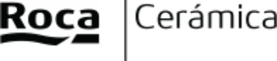
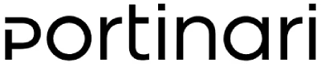
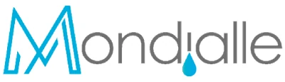
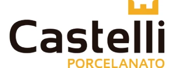
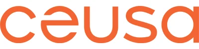

Colecciones
Cada superficie cuenta una historia. Nosotros elegimos las que merecen ser contadas.
No encontramos esa combinación en el catálogo online — pero el showroom guarda mucho más.
Consultar por WhatsApp




Conocés los materiales en persona, en piezas de gran formato, con asesoría dedicada.
Seleccionamos junto a vos y tu arquitecto las superficies exactas para cada ambiente.
Paginación, cortes, juntas y detalles resueltos antes de que llegue la primera caja.
Logística coordinada con la obra y soporte hasta la última pieza colocada.